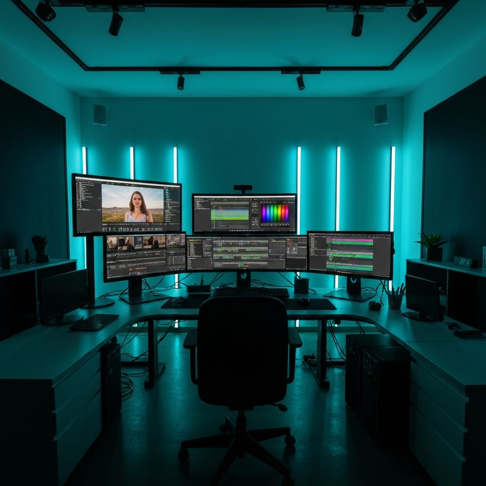
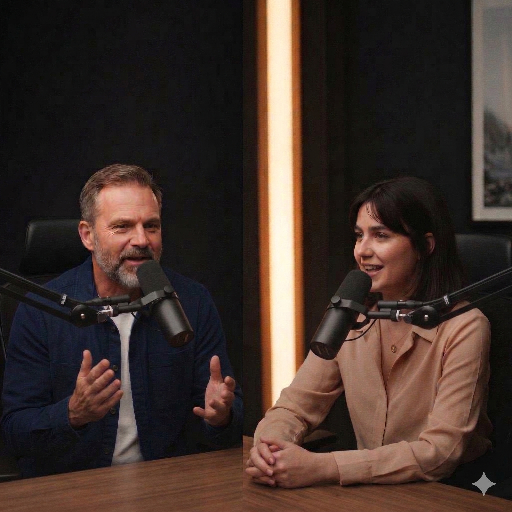
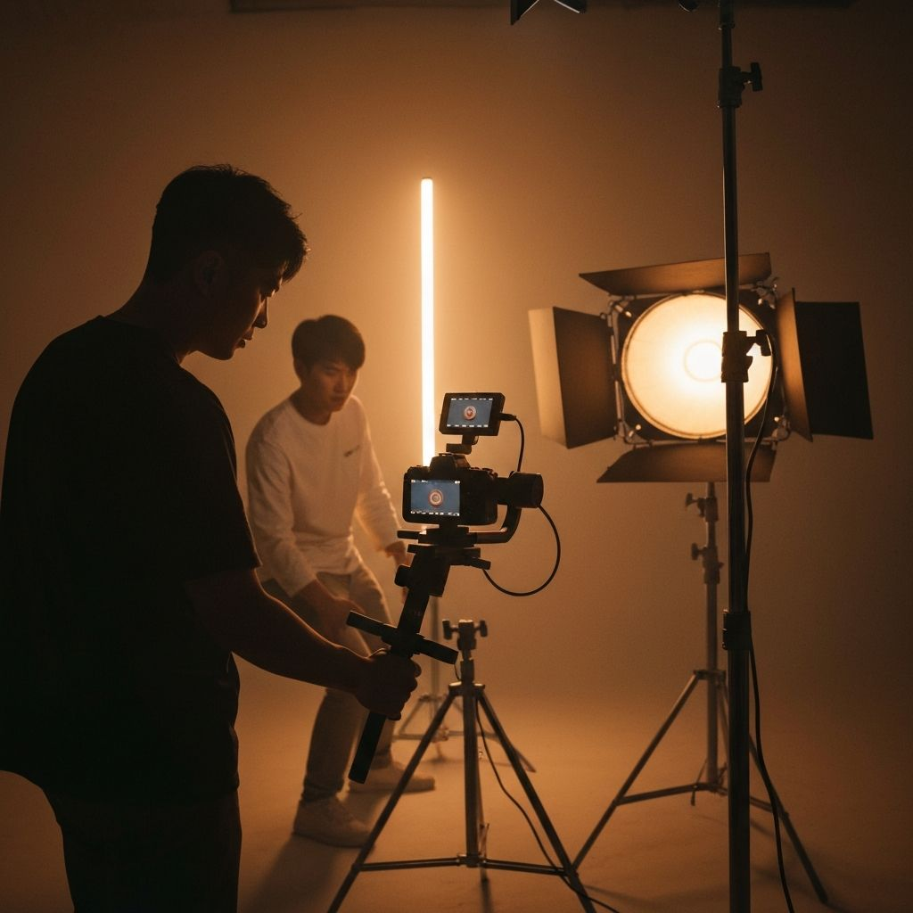
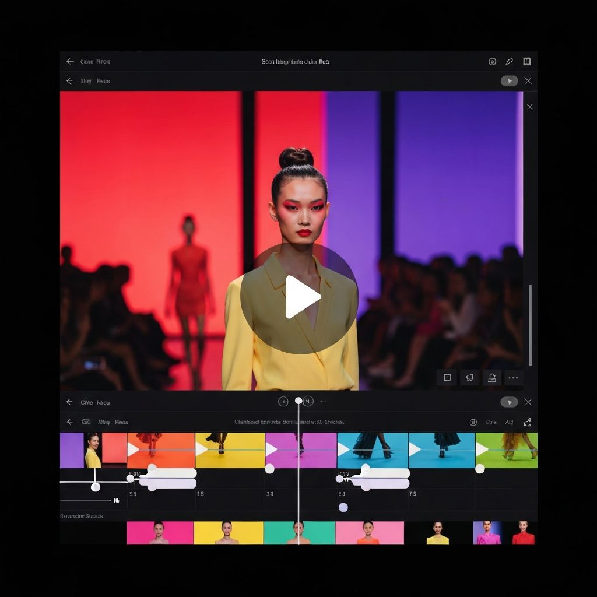

Edição de Video Profissional
Videos editados com foco em retenção, viralização e impacto visual. Cada corte, transição e efeito e pensado estratégicamente para prender a atencao do publico e entregar resultados.
O que esta incluso
Cada video e feito para performar
Cortes Dinamicos
Cortes precisos e ritmo acelerado para manter o espectador engajado do inicio ao fim do video.
Beat Sync
Sincronizacao perfeita com a batida da musica para criar um conteudo mais envolvente e viral.
Legendas Animadas
Legendas com animacoes estilo 'Hormozi' que aumentam drasticamente a retencao do conteudo.
B-Rolls e Imagens de Apoio
Insercao de b-rolls contextuais e imagens de apoio para manter o ritmo e ilustrar os pontos principais.
Color Grading
Correcao de cor cinematica para dar ao seu video uma estetica profissional e coesa.
Otimizacao para Plataformas
Formatacao especifica para TikTok, Instagram Reels, YouTube Shorts e qualquer outra plataforma.
Meu Processo
Do material bruto ao video final
Briefing e Alinhamento
Entendo o seu objetivo, publico-alvo, estilo desejado e referencia. Quanto mais informacao, melhor o resultado.
Selecao e Estrutura
Seleciono os melhores trechos do material bruto e estruturo a narrativa para maximizar a retencao.
Edicao e Efeitos
Aplico cortes, transicoes, legendas animadas, beat sync, color grading e todos os efeitos necessarios.
Revisao e Entrega
Envio o video para aprovacao com ate 2 rodadas de ajustes incluidas. Entrega final em alta qualidade.
Exemplos
Projetos de Video
Reels Dinâmico para Promoção de Lojas
Edição dinâmica realizada no CapCut, com cortes acelerados, sincronia com a batida da música, transições criativas e color grading cinematográfico.

Video de Conteudo/Podcast
Edição estruturada com cortes focados em retenção, inserção de B-rolls e legendas no estilo Hormozi, otimizadas para alto engajamento.

Producao de Video para Produto
Produção completa de vídeo para showcase de produto, incluindo filmagem, edição, iluminação profissional e efeitos visuais de alta qualidade.

Reels Dinamico para Marca de Moda
Edicao acelerada no CapCut, sincronia com a batida da musica, transicoes criativas e color grading cinematico.